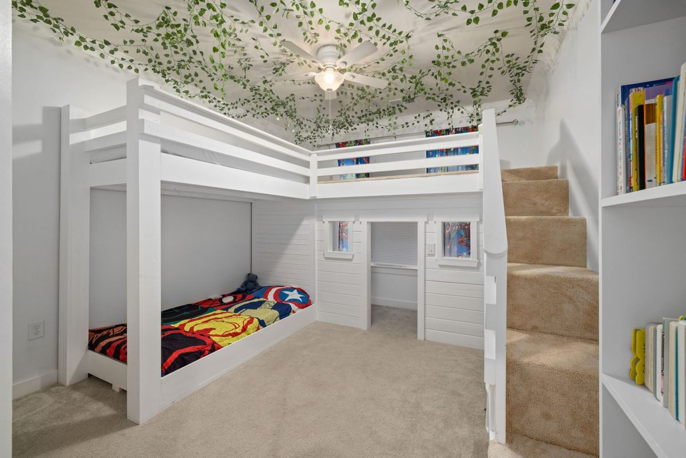

We haul old cribs, bunk beds, toddler beds, changing tables and the rest of an outgrown kids room, and we take them apart on site so they come down the stairs clean. The dresser and the bookshelf can often be donated. An old crib, and a drop-side crib in particular, usually cannot, so that one gets broken down and recycled instead.

That split surprises people. The crib is the piece everybody assumes somebody else will want, and it is the piece a donation dock most often turns away.
Why an old crib is hard to give away
Cribs are one of the few pieces of household furniture held to a federal safety standard. The rules for full-size cribs sit in 16 CFR Part 1219, and they were rewritten in 2011. Drop-side cribs, the kind where one rail slides down, stopped being made and sold new under that standard.
So a crib from before then may not meet today's rules, even if it looks perfect. The NIH's Safe to Sleep guidance says a baby's sleep space should meet the safety standards of the Consumer Product Safety Commission, and a secondhand crib with an unknown history is hard for anyone to vouch for.
That is why a lot of donation outlets will not take a used crib at all, and why we would not pass a drop-side one on to another family even if somebody would accept it. We are haulers, not safety inspectors, and we are not going to guess. It comes apart, the hardware and any metal go to recycling, and the rest is disposed of properly.
A newer crib in good shape is a different conversation. Tell us when it was bought and whether the instructions and hardware are still around, and we will be straight with you about whether it has a realistic donation path or not.
Check it before you list it yourself. If you are planning to sell or give the crib away privately instead of calling us, look for the manufacture date on the label and search for recalls on that model first. If it is a drop-side, the honest answer is that it should not go to another baby.
Bunk beds, loft beds and the stairwell
Bunk beds have their own federal requirements too, covering guardrails and the size of openings, laid out in 16 CFR Part 1513. For us the bigger issue is not the rules. It is the stairwell.
A bunk bed or a loft bed was almost always built inside the room it lives in. It came up the stairs in flat boxes and got assembled in place, which means it does not leave in one piece. The crew takes it down in the reverse order it went up: mattresses off, guardrails and ladder off, then the upper frame separated from the lower one, then the side rails.
Two things slow that down. Stripped or painted-over bolts, which are common on a bed that has been through two or three kids, and loft beds with a desk or shelving built into the base. Neither is a problem, but both are worth a photo before we come out so the crew brings the right tools.
A solid wood bunk bed in good condition with all its parts can sometimes be donated. Particleboard frames that have been assembled and taken apart a few times usually cannot, because they do not survive another move. The same stairs-and-doorways logic is covered in more detail in old furniture removal and getting it out of the house.
What else comes out of an outgrown room
A kids room collects things for a decade, and the bed is only the start. The usual list on one of these jobs:
- The crib or toddler bed, plus the crib mattress
- A changing table or a dresser with a changing topper screwed on
- A glider or rocking chair
- Bunk bed or loft bed frames and their mattresses
- Toy chests, cube shelving and plastic storage drawers
- A small desk and chair that stopped fitting around age ten
- Outdoor toys that migrated inside for winter and never left
Mattresses follow their own rules, and crib mattresses are no exception. Mattress disposal in DFW covers why most of them end up at a landfill rather than a donation dock. If the kids' room is in Frisco, the page on hauling outgrown bunk and crib mattresses out of a Frisco home covers how that pickup runs there. Stuffed animals and bags of outgrown clothes are fine to include, though clothes in good shape are usually better dropped at a donation center yourself.
If there is a car seat in the pile, check its expiration date, which is printed on the seat itself. Expired or crash-involved car seats are another item most donation outlets will not accept.
What gets donated and what does not
Solid dressers, bookshelves, nightstands and gliders in good shape are the pieces with a real second life. Those go to local donation partners, and where your junk goes after pickup explains how we sort a job at the curb. If you would rather drop the good pieces off yourself, Habitat for Humanity ReStore takes a wide range of furniture and is worth a look first.
What rarely has a donation path: older cribs, anything with a missing part, particleboard that has lost its screws, and crayon-covered furniture that looks loved in the way only a parent finds charming. That is not a judgment on the furniture. It is just where things go.
Is the city bulky pickup an option
Sometimes. Most cities in our area run a bulky collection program, and a flat-packed frame at the curb on the right week can be the free option. Plano publishes what it takes on its bulky waste accepted items page, and each nearby city has its own list and its own schedule.
The catch is usually the carrying and the timing. Somebody still has to take the bunk bed apart and get it down the stairs, and the room sits half-empty until collection day. If that works for you, use it. We would rather you save the money than pay for something the city will do.
How the job runs
Send a few photos of the room, especially the bed frames and the stairs they have to come down. A crew comes out, looks at what is going, and gives you a firm number before anything is lifted. The quote is the bill, and disposal is included. You point, we carry, we sweep.
Our own crews take it apart, carry it out and sort donation from recycling from disposal. If the room is becoming a guest room next, making the spare room a guest room again walks through what to clear first.
We work across the northern suburbs, including Frisco, McKinney, Plano, Allen, Prosper, Little Elm, The Colony, Richardson, Wylie and Fairview, seven days a week. Call before noon and same afternoon is typical, not guaranteed. The service page for this work is furniture removal, and you can send us photos of the room whenever it is ready.
Frequently asked questions
Will you donate our old crib?
Usually not. Older cribs, and drop-side cribs especially, may not meet the current federal crib standard, and most donation outlets will not take them. A newer crib in good shape with its hardware is worth asking about.
Do you take bunk beds apart, or do we need to?
We do it. The crew disassembles the frame in the room and carries the pieces out, so there is no need to have it taken down before we arrive.
Can you take the crib mattress too?
Yes. Crib mattresses, bunk mattresses and toddler mattresses all go with the frames.
What about the car seat and the high chair?
We can take both. Car seats have an expiration date printed on them, and expired ones are not something that should be passed on, so they are disposed of rather than donated.
Is there anything in a kids room you will not take?
Hazardous items only, such as old paint from a nursery project or leftover cleaning chemicals. Those go to your city's household chemical collection program instead.
Clearing a kids room is usually a good sign. Somebody grew up. The rest of what we haul is on the services page.